PENDUAN GERAKAN SENAM HAMIL
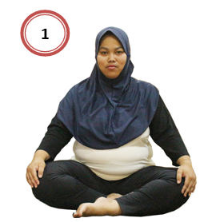
Duduk Bersila (Gambar 1)
Gerakan ini merupakan gerakan dasar senam hamil. duduk bersila merupakan posisi paling aman untuk ibu hamil karena tidak ada penekanan pada perut.Gerakan duduk bersila dikombinasikan dengan pemanasan, ingat posisi duduk bersila anda harus tegak. Berikut pemanasan yang bisa anda lakukan dengan gerakan ini:
- Duduk bersila tegak seperti hendak melakukan yoga
- Atur pernapasan
- Gelengkan kepala kanan dan kiri sebanyak 4 kali
- Tengok kanan dan kiri sebanyak 4 kali
- Menunduk dan menengadahkan kepala sebanyak 4 kali
- Lakukan gerakan tersebut sambil mengatur pernapasan dengan baik, cara mengatur pernapasan saat olahraga agar tidak ngos-ngosan adalah tarik nafas - tahan nafas - buang nafas
- Gerakan ini sangat disarankan untuk dilakukan sehari-hari, meskipun tidak dipadupadankan dengan gerakan senam lainnya
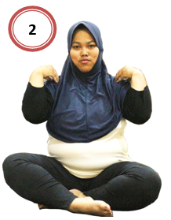
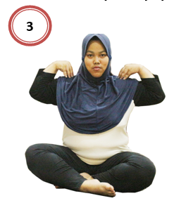
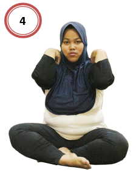
Melenturkan Lengan dan Mengencangkan Payudara (Gambar 2, 3 dan 4)
Gerakan senam untuk ibu hamil yang kedua adalah memutar lengan dan mengencangkan payudara. Berikut gerakan yang bisa anda lakukan dengan gerakan ini:
- Masih dalam posisi duduk bersila
- Letakkan jari-jari pada bahu
- Kemudian putar-putarlah ke depan dan ke belakang secara bergantian
- Masih dalam posisi jari-jari berada di bahu
- Gerakkan lengan ke arah depan sehingga kedua lengan menjepit payudara ke atas Lalu kembali ke posisi semula
- Lakukan gerakan ini sebanyak 8 kali.
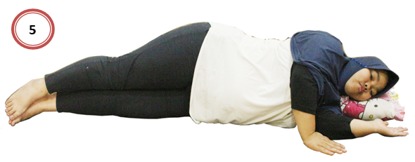
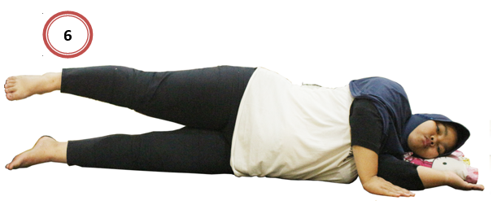
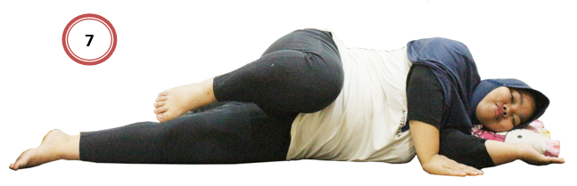
Gerakan Rileksasi (Gambar 5, 6 dan 7)
Gerakan senam untuk ibu hamil yang ketiga adalah melakukan gerakan rileksasi. Berikut gerakan yang bisa anda lakukan dengan gerakan ini:
- Tidurlah dalam posisi miring.
- Sangga kepala dengan bantal yang lembut.
- Tekuk kaki bagian atas, kaki bagian bawah lurus.
- Tarik napas dan hembuskan melalui mulut.
- Lalu, lakukan gerakan senam untuk ibu hamil dengan mengangkat kaki bagian atas setinggi pinggul. Kemudian turunkan.
- Kemudian dilanjutkan dengan mengangkat kaki atas dan tekuk ke arah perut. Lalu kembali ke posisi semula, yaitu sejajar dengan posisi kaki bawah yang lurus.
- Lakukan sebanyak 8 kali bergantian antara kakai kanan dan kaki kiri.
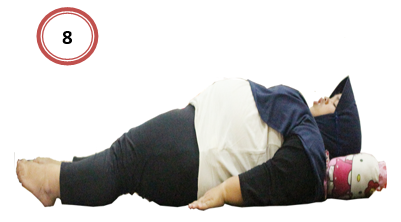
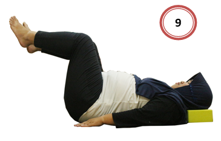
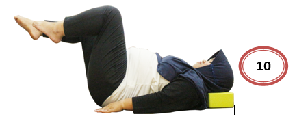
Gerakan Pergelangan Kaki dan Mengayuh (Gambar 8, 9 dan 10)
Gerakan senam untuk ibu hamil yang berikutnya adalah melakukan gerakan pergelangan kaki dan mengayuh. Berikut gerakan yang bisa anda lakukan dengan gerakan ini:
- Posisi tubuh terlentang, kedua kaki lurus.
- Tekanlah jari-jari kaki ke bawah lalu luruskan kembali. Putar pergelangan kaki dari arah kanan ke ke kiri. Lakukan sebaliknya.
- Lanjutkan senam untuk ibu hamil dengan gerakan seolah-olah sedang mengayuh sepeda.
- Kedua tangan rileks di samping tubuh.
- Lakukan sebanyak 8 kali.
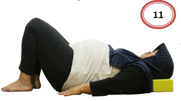
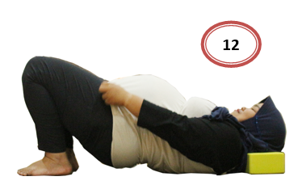
Gerakan Otot Panggul (Gambar 11 dan 12)
Gerakan ini bertujuan untuk melemaskan otot panggul agar siap menghadapi persalinan. Kekuatan otot panggul sangat dibutuhkan ibu hamil untuk mengejan saat proses persalinan berlangsung. Berikut contoh gerakannya:
- Posisikan tubuh ibu hamil berbaring
- Kedua kaki ditekuk dan tangan diletakkan disamping tubuh
- Tarik nafas dan tahan selama beberapa menit
- kencangkan otot panggul selama menahan nafas dengan cara mengangkat panggul keatas
- Hembuskan nafas secara perlahan kemudian kembalikan panggul ke posisi semula ulangi sebanyak 4 kali.
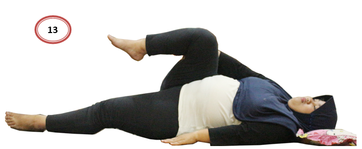
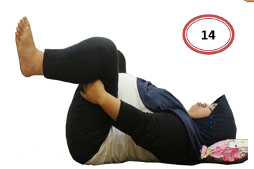
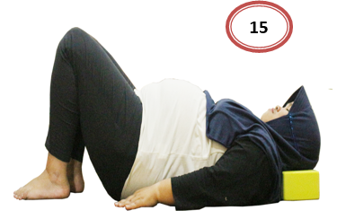
Latihan Membran (Gambar 13, 14 dan 15)
Gerakan senam untuk ibu hamil yang berikutnya adalah melakukan gerakan membran. Berikut gerakan yang bisa anda lakukan dengan gerakan ini:
- Posisi tidur terlentang, rangkul paha dengan tangan sampai siku.
- Lakukan dengan posisi miring ke kiri dan ke kanan.
- Lanjutkan dengan posisi terlentang, rangkul kedua paha dengan tangan sampai siku. Sambil menarik napas angkat kepala, pandangan ke perut. Lalu hembuskan napas.
- Lanjutkan dengan memegang pergelangan kaki (sesuai kemampuan/tidak sampai tidak apa-apa).
- Lakukan gerakan ini sebanyak 8 kali.
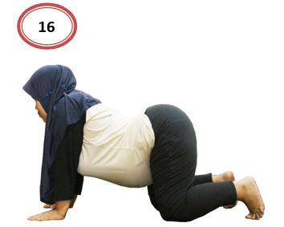
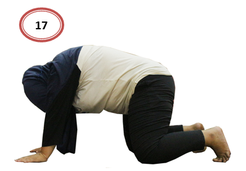
Gerakan Melenturkan Punggung (Gambar 16 dan 17)
Posisi badan sikap merangkak, tangan sejajar dengan bahu, sumbu badan menjadi 4 yaitu pada kedua tangan dan lutut, kemudian posisikan sejajar dengan lantai. Setelah itu kombinasikan dengan gerakan berikut:
- Menundukkan kepala sampai terlihat perut bagian bawah
- Angkat pinggang sambil mengempiskan perut dan mengerutkan liang dubur
- urunkan pinggang dengan mengangkat kepala sambil melemaskan otot-otot perut dan panggul
- Lakukan gerakan ini sebanyak 8 kali.
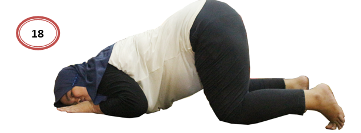
Gerakan Anti Sunsang (Gambar 18)
Gerakan ini sangat dianjurkan apabila sudah menginjak usia kehamilan 7 bulan atau diketahui diagnosa pemeriksaan kehamilan letak sungsang. Lakukan gerakan ini setiap hari lebih baik, meskipun tidak dengan gerakan senam hamil lainnya. Berikut contoh gerakannya:
- Posisi ibu hamil seperti sujud, dengan tangan diletakkan disamping kepala, kemudian kepala menoleh ke arah kiri dan kanan
- Tahan selama 1 menit kemudian bangun seperti posisi merangkak
- Lakukan gerakan ini sebanyak 8 kali atau sesering mungkin, sesuai kebutuhan, kemudian tingkatkan durasi sampai mampu menahan 5 menit.